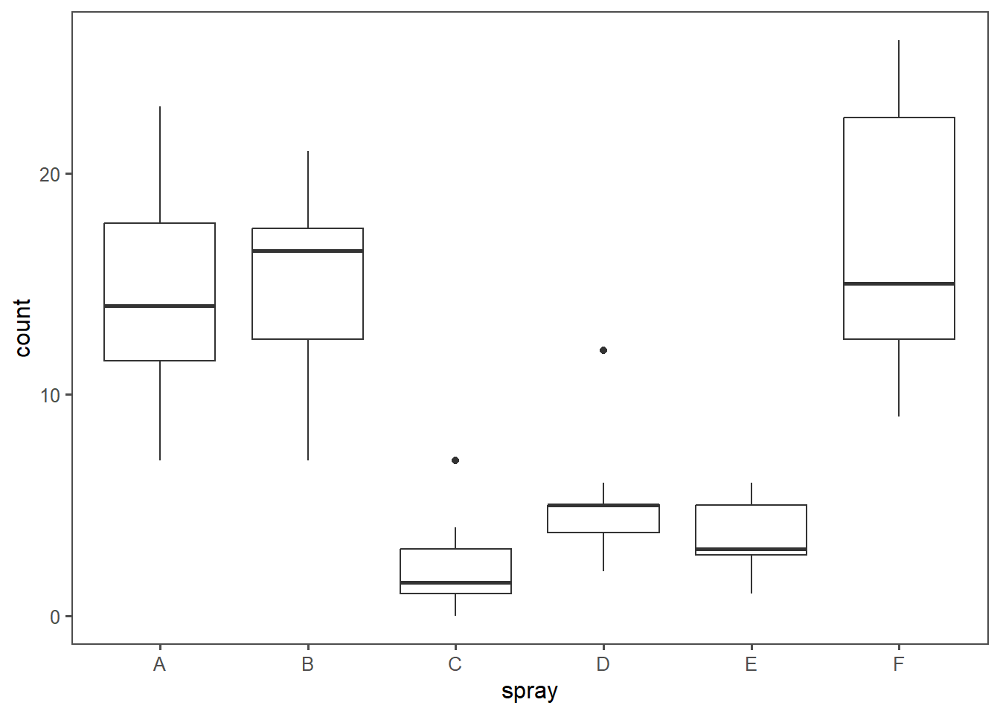
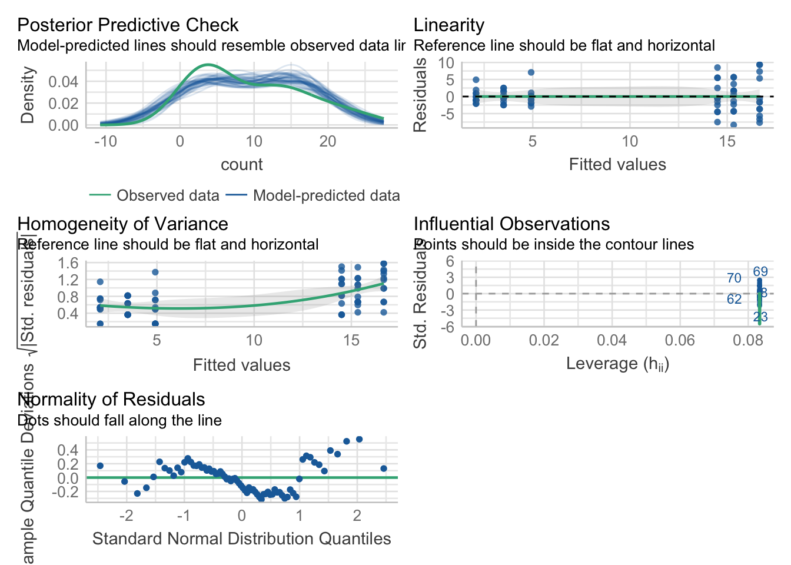

# Step 1: Create an aov object
mod.aov <- aov(formula = y ~ x1 + x2 + ...,
data = data)ANOVA in 4 steps
R
ANOVA
เกริ่น
คนข้าง ๆ ตัวผม หลายคน ถามเรื่องการวิเคราะห์ ANOVA โดย โปรแกรม R ผมจะไม่อถิบายว่า ANOVA คืออะไร เพราะว่าถ้าถามแล้วแสดงว่า อยากจะวิเคราะห์ บางที ไม่รู้อะไร ก็ วิเคราะห์ ANOVA ไว้ก่อน โดยไม่สนอะไร เอาเป็นว่า สอนง่าย ๆ เลย มี 4 ขั้นตอน ดังนี้
- สร้าง ANOVA object
สร้าง ANOVA object ก่อน โดยใช้ฟังก์ชัน aov() ในฟังก์ชัน aov() ให้ระบุตัวแปรอิสระและตัวแปรตามด้วยสูตรที่มีรูปแบบ y ~ x1 + x2 โดยที่ y เป็นตัวแปรตาม และ x1, x2 … เป็นตัวแปรอิสระหนึ่งตัวห รือมากกว่า
- สร้างตาราง ANOVA
สร้างตาราง ANOVA สรุปโดยใช้ฟังก์ชัน summary() กับ ANOVA object (ในที่นี่คือ mod.aov) ที่สร้างขึ้นในขั้นตอนที่ 1
# Step 2: Look at a summary of the aov object
summary(mod.aov)- การทดสอบ post-hoc หากจำเป็น
หากจำเป็น ให้ทดสอบ post-hoc โดยใช้ฟังก์ชัน post-hoc test เช่น TukeyHSD() กับ ANOVA object ที่คุณสร้างในขั้นตอนที่ 1
# Step 3: Calculate post-hoc tests
TukeyHSD(mod.aov)library(agricolae)
HSD.test(mod.aov, "Y", group = TRUE, console = TRUE)- แปลความลักษณะของความแตกต่างของกลุ่มทดสอบ (หากจำเป็น) ้ ตีความลักษณะของความแตกต่างของกลุ่ม โดยการสร้าง การถดถอยเชิงเส้นโดยใช้
lm()แทนaov()ในขั้นตอนที่ 1
# Step 4: Look at coefficients
mod.lm <- lm(formula = y ~ x1 + x2 + ...,
data = data)
summary(mod.lm)- ข้อนี้ผมอยากให้ทำ เพื่อ ตรวจ assumption ด้วย independence, homogeneity of variance และ Residuals vs fitted Values
ถ้าอยากอ่านหรือทำความเข้าใจเกี่ยวกับ ANOVA มากขึ้น อยากแนะนำให้อ่าน ANOVA Cookbook จะเห็นอะไรที่น่าสนใจ
# setting page
library(tidyverse)
library(knitr)
library(patchwork)
library(ggthemes)
library(rmarkdown)
theme_set(theme_few())
knitr::opts_chunk$set(echo = TRUE, warning = FALSE, message = FALSE)
options(digits = 3)ตัวอย่างInsectSprays
data("InsectSprays")
paged_table(InsectSprays)ggplot(data = InsectSprays, aes(x = spray, y = count)) + geom_boxplot()
# step 1
mod.aov <- aov(formula = count ~ spray, data = InsectSprays)
mod.aovCall:
aov(formula = count ~ spray, data = InsectSprays)
Terms:
spray Residuals
Sum of Squares 2669 1015
Deg. of Freedom 5 66
Residual standard error: 3.92
Estimated effects may be unbalanced# step 2
summary(mod.aov) Df Sum Sq Mean Sq F value Pr(>F)
spray 5 2669 534 34.7 <2e-16 ***
Residuals 66 1015 15
---
Signif. codes: 0 '***' 0.001 '**' 0.01 '*' 0.05 '.' 0.1 ' ' 1# step 3
TukeyHSD(mod.aov) Tukey multiple comparisons of means
95% family-wise confidence level
Fit: aov(formula = count ~ spray, data = InsectSprays)
$spray
diff lwr upr p adj
B-A 0.833 -3.87 5.53 0.995
C-A -12.417 -17.12 -7.72 0.000
D-A -9.583 -14.28 -4.88 0.000
E-A -11.000 -15.70 -6.30 0.000
F-A 2.167 -2.53 6.87 0.754
C-B -13.250 -17.95 -8.55 0.000
D-B -10.417 -15.12 -5.72 0.000
E-B -11.833 -16.53 -7.13 0.000
F-B 1.333 -3.37 6.03 0.960
D-C 2.833 -1.87 7.53 0.492
E-C 1.417 -3.28 6.12 0.949
F-C 14.583 9.88 19.28 0.000
E-D -1.417 -6.12 3.28 0.949
F-D 11.750 7.05 16.45 0.000
F-E 13.167 8.47 17.87 0.000library(agricolae)
out <- HSD.test(mod.aov, "spray")
out$groups count groups
F 16.67 a
B 15.33 a
A 14.50 a
D 4.92 b
E 3.50 b
C 2.08 b# step 4
mod.lm <- lm(formula = count ~ spray, data = InsectSprays)
mod.lm
Call:
lm(formula = count ~ spray, data = InsectSprays)
Coefficients:
(Intercept) sprayB sprayC sprayD sprayE sprayF
14.500 0.833 -12.417 -9.583 -11.000 2.167 # step 5 แถมให้เพื่อตรวจ assumptions
library(performance)
check_model(mod.aov)